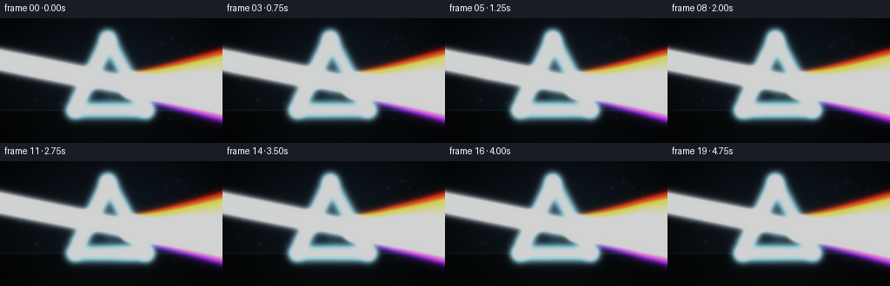
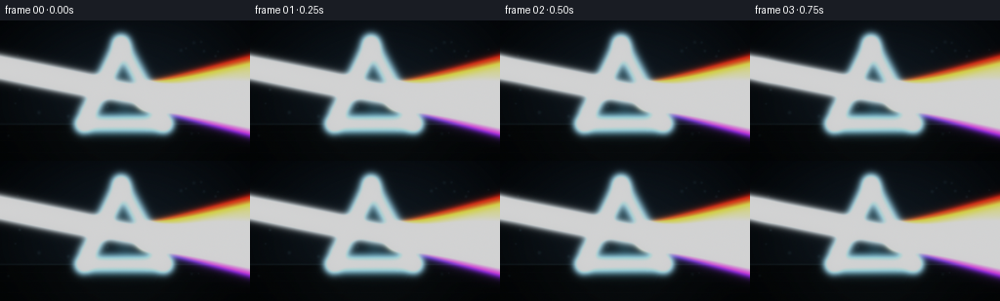
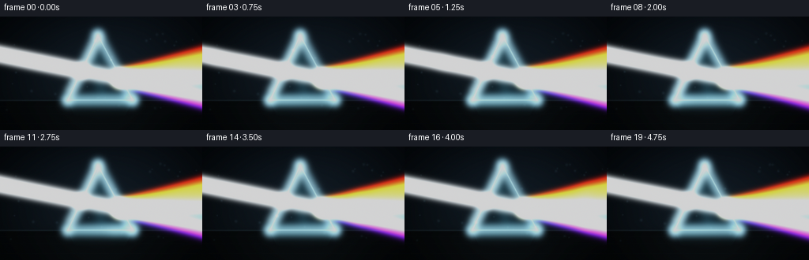
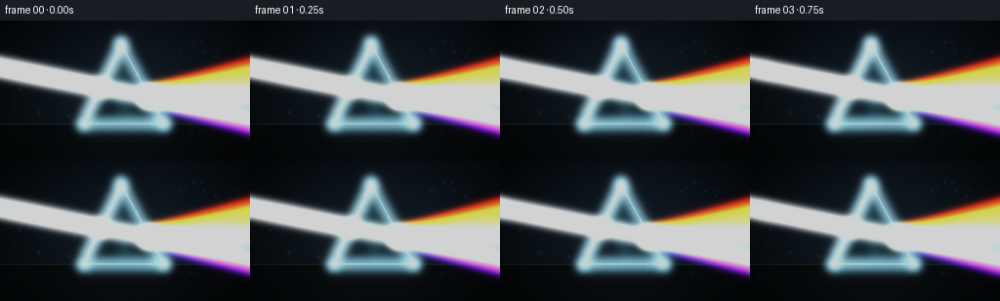
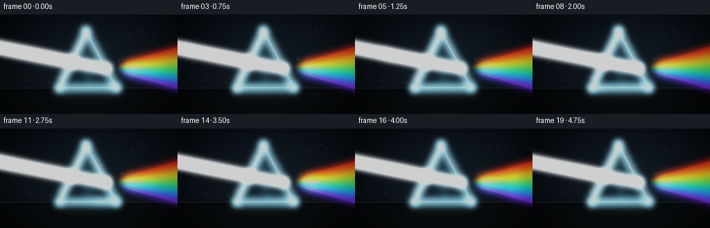
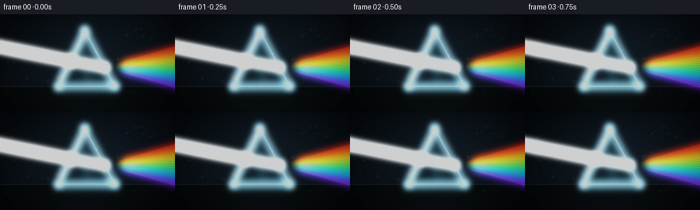

CODING AGENTS AS PIXEL WORLD MODELS
traex/DeepSeek-V4.1-Flash · phygen_086
点击播放 · 原生 RGB 像素
逐轮保存的候选
回放视频、检查图与代码变化。
每份候选均可单独播放。实际图片检查记录在下方工具轨迹中。
候选 01播放与检查图
点击播放 · 原生 RGB 像素


展开代码变化
--- 上一保存版本
+++ 本次保存版本
@@ -0,0 +1,416 @@
+from __future__ import annotations
+
+from pathlib import Path
+
+import numpy as np
+from PIL import Image, ImageFilter
+
+import artifact_io
+
+
+WIDTH = 256
+HEIGHT = 144
+FRAME_COUNT = 20
+FPS = 4.0
+SS = 4
+EPS = 1e-6
+
+
+def normalized(v: np.ndarray) -> np.ndarray:
+ return v / max(float(np.linalg.norm(v)), EPS)
+
+
+def segment_field(x, y, a, b):
+ """Distance and unclamped projection along a two-dimensional segment."""
+ ax, ay = a
+ bx, by = b
+ vx, vy = bx - ax, by - ay
+ length_sq = vx * vx + vy * vy
+ t = ((x - ax) * vx + (y - ay) * vy) / max(length_sq, EPS)
+ tc = np.clip(t, 0.0, 1.0)
+ dx = x - (ax + tc * vx)
+ dy = y - (ay + tc * vy)
+ return np.sqrt(dx * dx + dy * dy), t
+
+
+def triangle_signed_distance(x, y, vertices):
+ a, b, c = vertices
+ points = [(a, b), (b, c), (c, a)]
+ distances = []
+ for p, q in points:
+ d, _ = segment_field(x, y, p, q)
+ distances.append(d)
+ edge_distance = np.minimum.reduce(distances)
+
+ def cross(p, q):
+ return (q[0] - p[0]) * (y - p[1]) - (q[1] - p[1]) * (x - p[0])
+
+ s0, s1, s2 = cross(a, b), cross(b, c), cross(c, a)
+ inside = ((s0 >= 0) & (s1 >= 0) & (s2 >= 0)) | (
+ (s0 <= 0) & (s1 <= 0) & (s2 <= 0)
+ )
+ return np.where(inside, -edge_distance, edge_distance), inside
+
+
+def smoothstep(edge0, edge1, value):
+ t = np.clip((value - edge0) / max(edge1 - edge0, EPS), 0.0, 1.0)
+ return t * t * (3.0 - 2.0 * t)
+
+
+def add_segment(light, x, y, a, b, color, core, halo, wide, strength=1.0):
+ distance, _ = segment_field(x, y, a, b)
+ profile = (
+ core * np.exp(-0.5 * (distance / 0.48) ** 2)
+ + halo * np.exp(-0.5 * (distance / 1.75) ** 2)
+ + wide * np.exp(-0.5 * (distance / 5.0) ** 2)
+ )
+ light += profile[..., None] * np.asarray(color, dtype=np.float32) * strength
+
+
+def add_radial(light, x, y, center, radius, color, strength=1.0, aspect=1.0):
+ dx = x - center[0]
+ dy = (y - center[1]) * aspect
+ profile = np.exp(-0.5 * ((dx * dx + dy * dy) / max(radius * radius, EPS)))
+ light += profile[..., None] * np.asarray(color, dtype=np.float32) * strength
+
+
+def spectrum_color(t: float) -> np.ndarray:
+ stops = np.asarray(
+ [
+ [0.00, 1.00, 0.055, 0.018],
+ [0.15, 1.00, 0.235, 0.015],
+ [0.31, 1.00, 0.770, 0.035],
+ [0.46, 0.30, 1.000, 0.115],
+ [0.61, 0.025, 0.920, 0.440],
+ [0.75, 0.030, 0.530, 1.000],
+ [0.88, 0.115, 0.165, 1.000],
+ [1.00, 0.510, 0.045, 1.000],
+ ],
+ dtype=np.float32,
+ )
+ t = float(np.clip(t, 0.0, 1.0))
+ for i in range(len(stops) - 1):
+ if t <= stops[i + 1, 0]:
+ f = (t - stops[i, 0]) / (stops[i + 1, 0] - stops[i, 0])
+ return stops[i, 1:] * (1.0 - f) + stops[i + 1, 1:] * f
+ return stops[-1, 1:].copy()
+
+
+def build_background(x, y, prism_center):
+ yy = y / HEIGHT
+ xx = x / WIDTH
+
+ # Deep blue-black studio with a restrained warm-to-cool optical bench.
+ top = np.asarray([0.006, 0.012, 0.018], dtype=np.float32)
+ bottom = np.asarray([0.014, 0.022, 0.027], dtype=np.float32)
+ bg = top[None, None, :] * (1.0 - yy[..., None]) + bottom[None, None, :] * yy[..., None]
+
+ center_glow = np.exp(
+ -0.5
+ * (
+ ((x - prism_center[0]) / 92.0) ** 2
+ + ((y - prism_center[1]) / 57.0) ** 2
+ )
+ )
+ bg += center_glow[..., None] * np.asarray([0.018, 0.032, 0.044], dtype=np.float32)
+
+ # A soft diagonal studio falloff keeps the dark field from looking flat.
+ diagonal = np.exp(-0.5 * (((x + y * 0.48) - 175.0) / 95.0) ** 2)
+ bg += diagonal[..., None] * np.asarray([0.010, 0.013, 0.018], dtype=np.float32)
+
+ floor_y = 106.5
+ floor_mask = smoothstep(floor_y - 0.7, floor_y + 1.1, y)
+ floor_color = (
+ np.asarray([0.013, 0.019, 0.022], dtype=np.float32)[None, None, :]
+ * (0.82 + 0.18 * np.exp(-((x - 128.0) / 112.0) ** 2))[..., None]
+ )
+ floor_color += np.exp(-0.5 * ((x - 127.0) / 58.0) ** 2)[..., None] * np.asarray(
+ [0.009, 0.013, 0.015], dtype=np.float32
+ )
+ bg = bg * (1.0 - floor_mask[..., None]) + floor_color * floor_mask[..., None]
+
+ # Fine table edge and a few perspective lines, kept below the beam fan.
+ edge = np.exp(-0.5 * ((y - floor_y) / 0.58) ** 2)
+ bg += edge[..., None] * np.asarray([0.035, 0.052, 0.058], dtype=np.float32)
+ for offset in (8.0, 17.0, 29.0):
+ line = np.exp(-0.5 * ((y - (floor_y + offset)) / 0.45) ** 2)
+ bg += line[..., None] * np.asarray([0.003, 0.005, 0.006], dtype=np.float32)
+
+ vignette = np.clip(
+ 1.0 - 0.60 * (((x - WIDTH * 0.50) / (WIDTH * 0.68)) ** 2 + ((y - HEIGHT * 0.48) / (HEIGHT * 0.84)) ** 2),
+ 0.30,
+ 1.0,
+ )
+ bg *= vignette[..., None]
+ return bg
+
+
+def add_prism(scene, light, x, y, vertices):
+ apex, left_base, right_base = vertices
+ sdf, inside = triangle_signed_distance(x, y, vertices)
+ mask = 1.0 - smoothstep(-0.55, 0.55, sdf)
+
+ # The prism is transparent: its interior lifts and cools the background.
+ local_y = np.clip((y - apex[1]) / (right_base[1] - apex[1]), 0.0, 1.0)
+ local_x = np.clip((x - left_base[0]) / (right_base[0] - left_base[0]), 0.0, 1.0)
+ facet = 0.55 + 0.45 * smoothstep(0.1, 0.95, local_x)
+ glass_tint = (
+ np.asarray([0.020, 0.075, 0.095], dtype=np.float32)[None, None, :]
+ * (0.30 + 0.70 * (1.0 - local_y[..., None]))
+ + np.asarray([0.005, 0.012, 0.016], dtype=np.float32)[None, None, :]
+ )
+ glass = scene * (0.66 + 0.13 * facet[..., None]) + glass_tint * facet[..., None]
+
+ # Internal caustic bands create depth without obscuring the beam.
+ center_band = np.exp(-0.5 * ((local_x - (0.34 + 0.20 * local_y)) / 0.075) ** 2)
+ center_band *= np.exp(-0.5 * ((local_y - 0.58) / 0.31) ** 2)
+ glass += center_band[..., None] * np.asarray([0.030, 0.082, 0.100], dtype=np.float32)
+
+ lower_bevel = np.exp(-0.5 * ((local_y - 0.91) / 0.055) ** 2)
+ lower_bevel *= smoothstep(0.10, 0.88, local_x) * (1.0 - smoothstep(0.90, 1.0, local_x))
+ glass += lower_bevel[..., None] * np.asarray([0.015, 0.040, 0.050], dtype=np.float32)
+
+ scene = scene * (1.0 - mask[..., None]) + glass * mask[..., None]
+
+ # Soft contact shadow and a faint mirror reflection on the optical bench.
+ shadow = np.exp(
+ -0.5
+ * (
+ ((x - 127.0) / 47.0) ** 2
+ + ((y - 107.0) / 3.3) ** 2
+ )
+ )
+ scene *= 1.0 - 0.28 * shadow[..., None]
+
+ reflection = np.clip((y - 108.0) / 20.0, 0.0, 1.0)
+ reflected_triangle, _ = triangle_signed_distance(
+ x,
+ y,
+ (
+ (apex[0], 2.0 * 107.0 - apex[1]),
+ (left_base[0], 2.0 * 107.0 - left_base[1]),
+ (right_base[0], 2.0 * 107.0 - right_base[1]),
+ ),
+ )
+ reflected_mask = (1.0 - smoothstep(-0.5, 0.5, reflected_triangle)) * (y > 107.0)
+ reflected_mask *= (1.0 - reflection) ** 1.6
+ scene += reflected_mask[..., None] * np.asarray([0.018, 0.047, 0.055], dtype=np.float32)
+
+ # Bright, slightly asymmetric glass edges.
+ edges = (
+ (apex, left_base, 0.95, 0.28, 2.3),
+ (right_base, apex, 0.80, 0.22, 2.0),
+ (left_base, right_base, 0.68, 0.18, 1.8),
+ )
+ for a, b, core, halo, wide in edges:
+ add_segment(light, x, y, a, b, (0.55, 0.86, 1.00), core, halo, wide)
+
+ # Short bevel highlights suggest polished facets rather than a wire outline.
+ add_segment(
+ light,
+ x,
+ y,
+ (apex[0] + 1.1, apex[1] + 5.0),
+ (left_base[0] + 4.0, left_base[1] - 13.0),
+ (0.75, 0.95, 1.00),
+ 0.20,
+ 0.08,
+ 0.9,
+ )
+ add_segment(
+ light,
+ x,
+ y,
+ (right_base[0] - 8.0, right_base[1] - 4.0),
+ (right_base[0] - 1.5, right_base[1] - 2.0),
+ (0.36, 0.76, 1.00),
+ 0.22,
+ 0.07,
+ 0.7,
+ )
+ return scene
+
+
+def build_static_layers():
+ h = HEIGHT * SS
+ w = WIDTH * SS
+ yy, xx = np.mgrid[0:h, 0:w].astype(np.float32)
+ x = (xx + 0.5) / SS
+ y = (yy + 0.5) / SS
+
+ apex = (124.0, 24.0)
+ left_base = (86.0, 106.0)
+ right_base = (168.0, 106.0)
+ vertices = (apex, left_base, right_base)
+ entry = (103.4, 69.0)
+ exit_point = (152.7, 78.0)
+
+ scene = build_background(x, y, (127.0, 66.0))
+ light = np.zeros((h, w, 3), dtype=np.float32)
+ scene = add_prism(scene, light, x, y, vertices)
+
+ # Incoming coherent beam, with a subtle cool fringe.
+ add_segment(light, x, y, (-12.0, 45.7), entry, (0.80, 0.94, 1.00), 0.66, 0.22, 3.8)
+ add_segment(light, x, y, (-12.0, 45.7), entry, (1.00, 1.00, 1.00), 1.38, 0.48, 6.5)
+
+ # The refracted white core inside the glass is softer and slightly cyan.
+ add_segment(light, x, y, entry, exit_point, (0.65, 0.90, 1.00), 0.34, 0.13, 2.2)
+ add_segment(light, x, y, entry, exit_point, (0.92, 0.98, 1.00), 0.64, 0.20, 3.5)
+
+ # Dense spectrum rays. Their overlap reads white at the exit and resolves
+ # into distinct bands as the fan expands to the right.
+ ray_count = 24
+ for index in range(ray_count):
+ t = index / (ray_count - 1)
+ endpoint_y = 44.0 + 67.0 * t
+ endpoint = (WIDTH + 14.0, endpoint_y)
+ color = spectrum_color(t)
+ add_segment(light, x, y, exit_point, endpoint, color, 0.34, 0.125, 2.25)
+ add_segment(light, x, y, exit_point, endpoint, color, 0.50, 0.11, 4.2)
+
+ # A very low-opacity fan haze makes the spectrum read at a glance.
+ fan_start = np.asarray(exit_point, dtype=np.float32)
+ red_dir = normalized(np.asarray([WIDTH + 14.0, 44.0], dtype=np.float32) - fan_start)
+ violet_dir = normalized(np.asarray([WIDTH + 14.0, 111.0], dtype=np.float32) - fan_start)
+ vx = x - exit_point[0]
+ vy = y - exit_point[1]
+ forward = vx * red_dir[0] + vy * red_dir[1]
+ spread = vx * violet_dir[1] - vy * violet_dir[0]
+ fan = smoothstep(0.0, 11.0, forward) * np.exp(-0.5 * (spread / 10.5) ** 2)
+ fan *= 1.0 - smoothstep(92.0, 125.0, forward)
+ fan_color = np.asarray([0.045, 0.025, 0.055], dtype=np.float32)
+ light += fan[..., None] * fan_color
+
+ # Small source flare just outside the frame's left edge.
+ add_radial(light, x, y, (-1.0, 45.7), 2.5, (0.95, 0.99, 1.00), 0.45)
+
+ # Prism base catches a thin cold rim.
+ add_segment(
+ light,
+ x,
+ y,
+ (90.0, 106.0),
+ (163.0, 106.0),
+ (0.18, 0.45, 0.55),
+ 0.16,
+ 0.06,
+ 1.2,
+ )
+ return scene, light, x, y, (entry, exit_point)
+
+
+def downsample(array):
+ image = Image.fromarray(np.clip(array * 255.0, 0.0, 255.0).astype(np.uint8), mode="RGB")
+ return np.asarray(image.resize((WIDTH, HEIGHT), Image.Resampling.LANCZOS), dtype=np.float32) / 255.0
+
+
+def blur_small(array, radius):
+ image = Image.fromarray(np.clip(array * 255.0, 0.0, 255.0).astype(np.uint8), mode="RGB")
+ blurred = image.filter(ImageFilter.GaussianBlur(radius=radius))
+ return np.asarray(blurred, dtype=np.float32) / 255.0
+
+
+def draw_glints(frame_light, t):
+ yy, xx = np.mgrid[0 : HEIGHT * SS, 0 : WIDTH * SS].astype(np.float32)
+ x = (xx + 0.5) / SS
+ y = (yy + 0.5) / SS
+
+ # Two restrained highlights travel along the left face and lower edge.
+ phase = (t + 0.08) % 1.0
+ top = np.asarray([124.0, 24.0], dtype=np.float32)
+ left = np.asarray([86.0, 106.0], dtype=np.float32)
+ glint_a = top * (1.0 - phase) + left * phase
+ add_radial(frame_light, x, y, glint_a, 1.15, (0.70, 0.94, 1.00), 0.45)
+
+ phase_b = (0.62 - t * 0.72) % 1.0
+ right = np.asarray([168.0, 106.0], dtype=np.float32)
+ glint_b = right * (1.0 - phase_b) + top * phase_b
+ add_radial(frame_light, x, y, glint_b, 0.85, (0.50, 0.82, 1.00), 0.28)
+
+ # A tiny moving caustic where the white beam enters the glass.
+ entry_shift = 0.65 * np.sin(2.0 * np.pi * t)
+ add_radial(
+ frame_light,
+ x,
+ y,
+ (103.4 + entry_shift, 69.0),
+ 2.15,
+ (0.80, 0.96, 1.00),
+ 0.22,
+ )
+
+
+def add_dust(frame_light, t):
+ yy, xx = np.mgrid[0 : HEIGHT * SS, 0 : WIDTH * SS].astype(np.float32)
+ x = (xx + 0.5) / SS
+ y = (yy + 0.5) / SS
+ rng = np.random.default_rng(20261111)
+ count = 34
+ base_x = rng.uniform(5.0, 247.0, count)
+ base_y = rng.uniform(15.0, 121.0, count)
+ speed = rng.uniform(0.18, 0.55, count)
+ drift = rng.uniform(-0.32, 0.32, count)
+ size = rng.uniform(0.26, 0.68, count)
+ phase = rng.uniform(0.0, 1.0, count)
+
+ for i in range(count):
+ px = (base_x[i] + speed[i] * t * 17.0 + 251.0) % 251.0
+ py = base_y[i] + drift[i] * t * 9.0 + 0.9 * np.sin(2.0 * np.pi * (phase[i] + t))
+ # Dust is visible mainly where the optical field illuminates it.
+ illumination = 0.22 + 0.78 * np.exp(-0.5 * ((py - 66.0) / 37.0) ** 2)
+ add_radial(
+ frame_light,
+ x,
+ y,
+ (px, py),
+ size[i] * 1.9,
+ (0.42, 0.66, 0.78),
+ 0.065 * illumination,
+ )
+
+
+def render_frame(index, scene, static_light):
+ t = index / FRAME_COUNT
+ scene_frame = scene.copy()
+ light = static_light.copy()
+
+ # One traveling wave per cycle and one brighter pulse sweeping left to right.
+ pulse_x = -34.0 + (WIDTH + 72.0) * t
+ wave = 0.94 + 0.075 * np.sin(2.0 * np.pi * (scene_x / 165.0 - 1.35 * t))
+ pulse = 1.0 + 0.22 * np.exp(-0.5 * ((scene_x - pulse_x) / 8.0) ** 2)
+ light *= (wave * pulse)[..., None]
+
+ draw_glints(light, t)
+ add_dust(light, t)
+
+ combined = scene_frame + light
+ small = downsample(combined)
+ light_small = downsample(light)
+ bloom_near = blur_small(light_small, 1.15)
+ bloom_far = blur_small(light_small, 5.5)
+ small += 0.25 * bloom_near + 0.11 * bloom_far
+
+ # Filmic highlight roll-off, with a very slight cool lift in the shadows.
+ small = np.maximum(small, 0.0)
+ mapped = 1.0 - np.exp(-1.22 * small)
+ mapped = np.power(np.clip(mapped, 0.0, 1.0), 0.94)
+ mapped += np.asarray([0.0015, 0.0035, 0.0050], dtype=np.float32)
+
+ # Very light dithering avoids banding in the dark studio gradient.
+ rng = np.random.default_rng(4100 + index)
+ noise = rng.normal(0.0, 0.0012, mapped.shape).astype(np.float32)
+ mapped = np.clip(mapped + noise, 0.0, 1.0)
+ return np.round(mapped * 255.0).astype(np.uint8)
+
+
+def main():
+ global scene_x
+ case_dir = Path(__file__).resolve().parent
+ scene, light, scene_x, _, _ = build_static_layers()
+ frames = np.stack([render_frame(i, scene, light) for i in range(FRAME_COUNT)])
+ artifact_io.save(frames, case_dir)
+ print(f"Wrote {FRAME_COUNT} frames to {case_dir / 'frames'}")
+
+
+if __name__ == "__main__":
+ main()
候选 02播放与检查图
点击播放 · 原生 RGB 像素

展开代码变化
--- 上一保存版本
+++ 本次保存版本
@@ -198,9 +198,9 @@
# Bright, slightly asymmetric glass edges.
edges = (
- (apex, left_base, 0.95, 0.28, 2.3),
- (right_base, apex, 0.80, 0.22, 2.0),
- (left_base, right_base, 0.68, 0.18, 1.8),
+ (apex, left_base, 0.50, 0.12, 0.75),
+ (right_base, apex, 0.43, 0.10, 0.65),
+ (left_base, right_base, 0.32, 0.08, 0.55),
)
for a, b, core, halo, wide in edges:
add_segment(light, x, y, a, b, (0.55, 0.86, 1.00), core, halo, wide)
@@ -213,9 +213,9 @@
(apex[0] + 1.1, apex[1] + 5.0),
(left_base[0] + 4.0, left_base[1] - 13.0),
(0.75, 0.95, 1.00),
- 0.20,
- 0.08,
- 0.9,
+ 0.12,
+ 0.035,
+ 0.30,
)
add_segment(
light,
@@ -224,9 +224,9 @@
(right_base[0] - 8.0, right_base[1] - 4.0),
(right_base[0] - 1.5, right_base[1] - 2.0),
(0.36, 0.76, 1.00),
- 0.22,
- 0.07,
- 0.7,
+ 0.14,
+ 0.035,
+ 0.25,
)
return scene
@@ -250,23 +250,23 @@
scene = add_prism(scene, light, x, y, vertices)
# Incoming coherent beam, with a subtle cool fringe.
- add_segment(light, x, y, (-12.0, 45.7), entry, (0.80, 0.94, 1.00), 0.66, 0.22, 3.8)
- add_segment(light, x, y, (-12.0, 45.7), entry, (1.00, 1.00, 1.00), 1.38, 0.48, 6.5)
+ add_segment(light, x, y, (-12.0, 45.7), entry, (0.80, 0.94, 1.00), 0.32, 0.10, 1.3)
+ add_segment(light, x, y, (-12.0, 45.7), entry, (1.00, 1.00, 1.00), 0.72, 0.22, 3.4)
# The refracted white core inside the glass is softer and slightly cyan.
- add_segment(light, x, y, entry, exit_point, (0.65, 0.90, 1.00), 0.34, 0.13, 2.2)
- add_segment(light, x, y, entry, exit_point, (0.92, 0.98, 1.00), 0.64, 0.20, 3.5)
+ add_segment(light, x, y, entry, exit_point, (0.65, 0.90, 1.00), 0.18, 0.07, 0.9)
+ add_segment(light, x, y, entry, exit_point, (0.92, 0.98, 1.00), 0.40, 0.10, 2.1)
# Dense spectrum rays. Their overlap reads white at the exit and resolves
# into distinct bands as the fan expands to the right.
- ray_count = 24
+ ray_count = 32
for index in range(ray_count):
t = index / (ray_count - 1)
endpoint_y = 44.0 + 67.0 * t
endpoint = (WIDTH + 14.0, endpoint_y)
color = spectrum_color(t)
- add_segment(light, x, y, exit_point, endpoint, color, 0.34, 0.125, 2.25)
- add_segment(light, x, y, exit_point, endpoint, color, 0.50, 0.11, 4.2)
+ add_segment(light, x, y, exit_point, endpoint, color, 0.19, 0.042, 0.50)
+ add_segment(light, x, y, exit_point, endpoint, color, 0.29, 0.055, 1.55)
# A very low-opacity fan haze makes the spectrum read at a glance.
fan_start = np.asarray(exit_point, dtype=np.float32)
@@ -276,9 +276,9 @@
vy = y - exit_point[1]
forward = vx * red_dir[0] + vy * red_dir[1]
spread = vx * violet_dir[1] - vy * violet_dir[0]
- fan = smoothstep(0.0, 11.0, forward) * np.exp(-0.5 * (spread / 10.5) ** 2)
+ fan = smoothstep(2.0, 28.0, forward) * np.exp(-0.5 * (spread / 11.0) ** 2)
fan *= 1.0 - smoothstep(92.0, 125.0, forward)
- fan_color = np.asarray([0.045, 0.025, 0.055], dtype=np.float32)
+ fan_color = np.asarray([0.011, 0.005, 0.014], dtype=np.float32)
light += fan[..., None] * fan_color
# Small source flare just outside the frame's left edge.
@@ -292,9 +292,9 @@
(90.0, 106.0),
(163.0, 106.0),
(0.18, 0.45, 0.55),
- 0.16,
- 0.06,
- 1.2,
+ 0.08,
+ 0.022,
+ 0.35,
)
return scene, light, x, y, (entry, exit_point)
@@ -386,13 +386,13 @@
combined = scene_frame + light
small = downsample(combined)
light_small = downsample(light)
- bloom_near = blur_small(light_small, 1.15)
- bloom_far = blur_small(light_small, 5.5)
- small += 0.25 * bloom_near + 0.11 * bloom_far
+ bloom_near = blur_small(light_small, 0.85)
+ bloom_far = blur_small(light_small, 4.0)
+ small += 0.13 * bloom_near + 0.045 * bloom_far
# Filmic highlight roll-off, with a very slight cool lift in the shadows.
small = np.maximum(small, 0.0)
- mapped = 1.0 - np.exp(-1.22 * small)
+ mapped = 1.0 - np.exp(-1.42 * small)
mapped = np.power(np.clip(mapped, 0.0, 1.0), 0.94)
mapped += np.asarray([0.0015, 0.0035, 0.0050], dtype=np.float32)
候选 03播放与检查图
点击播放 · 原生 RGB 像素


展开代码变化
--- 上一保存版本
+++ 本次保存版本
@@ -57,13 +57,18 @@
return t * t * (3.0 - 2.0 * t)
-def add_segment(light, x, y, a, b, color, core, halo, wide, strength=1.0):
+def add_segment(
+ light, x, y, a, b, color, core, halo, wide, strength=1.0, fade_start=0.0
+):
distance, _ = segment_field(x, y, a, b)
profile = (
core * np.exp(-0.5 * (distance / 0.48) ** 2)
+ halo * np.exp(-0.5 * (distance / 1.75) ** 2)
+ wide * np.exp(-0.5 * (distance / 5.0) ** 2)
)
+ if fade_start > 0.0:
+ _, projection = segment_field(x, y, a, b)
+ profile *= smoothstep(fade_start, min(fade_start + 0.18, 0.96), projection)
light += profile[..., None] * np.asarray(color, dtype=np.float32) * strength
@@ -265,8 +270,30 @@
endpoint_y = 44.0 + 67.0 * t
endpoint = (WIDTH + 14.0, endpoint_y)
color = spectrum_color(t)
- add_segment(light, x, y, exit_point, endpoint, color, 0.19, 0.042, 0.50)
- add_segment(light, x, y, exit_point, endpoint, color, 0.29, 0.055, 1.55)
+ add_segment(
+ light,
+ x,
+ y,
+ exit_point,
+ endpoint,
+ color,
+ 0.17,
+ 0.034,
+ 0.38,
+ fade_start=0.07,
+ )
+ add_segment(
+ light,
+ x,
+ y,
+ exit_point,
+ endpoint,
+ color,
+ 0.20,
+ 0.035,
+ 0.82,
+ fade_start=0.12,
+ )
# A very low-opacity fan haze makes the spectrum read at a glance.
fan_start = np.asarray(exit_point, dtype=np.float32)
@@ -278,7 +305,7 @@
spread = vx * violet_dir[1] - vy * violet_dir[0]
fan = smoothstep(2.0, 28.0, forward) * np.exp(-0.5 * (spread / 11.0) ** 2)
fan *= 1.0 - smoothstep(92.0, 125.0, forward)
- fan_color = np.asarray([0.011, 0.005, 0.014], dtype=np.float32)
+ fan_color = np.asarray([0.006, 0.0025, 0.008], dtype=np.float32)
light += fan[..., None] * fan_color
# Small source flare just outside the frame's left edge.
候选 04播放与检查图
候选 05播放与检查图
点击播放 · 原生 RGB 像素


展开代码变化
--- 上一保存版本
+++ 本次保存版本
@@ -264,7 +264,7 @@
# Dense spectrum rays. Their overlap reads white at the exit and resolves
# into distinct bands as the fan expands to the right.
- ray_count = 32
+ ray_count = 24
for index in range(ray_count):
t = index / (ray_count - 1)
endpoint_y = 44.0 + 67.0 * t
@@ -277,10 +277,10 @@
exit_point,
endpoint,
color,
- 0.17,
- 0.034,
- 0.38,
- fade_start=0.07,
+ 0.16,
+ 0.010,
+ 0.050,
+ fade_start=0.12,
)
add_segment(
light,
@@ -289,10 +289,10 @@
exit_point,
endpoint,
color,
- 0.20,
- 0.035,
- 0.82,
- fade_start=0.12,
+ 0.19,
+ 0.006,
+ 0.060,
+ fade_start=0.18,
)
# A very low-opacity fan haze makes the spectrum read at a glance.
@@ -305,7 +305,7 @@
spread = vx * violet_dir[1] - vy * violet_dir[0]
fan = smoothstep(2.0, 28.0, forward) * np.exp(-0.5 * (spread / 11.0) ** 2)
fan *= 1.0 - smoothstep(92.0, 125.0, forward)
- fan_color = np.asarray([0.006, 0.0025, 0.008], dtype=np.float32)
+ fan_color = np.asarray([0.0015, 0.0006, 0.0020], dtype=np.float32)
light += fan[..., None] * fan_color
# Small source flare just outside the frame's left edge.
@@ -415,7 +415,7 @@
light_small = downsample(light)
bloom_near = blur_small(light_small, 0.85)
bloom_far = blur_small(light_small, 4.0)
- small += 0.13 * bloom_near + 0.045 * bloom_far
+ small += 0.10 * bloom_near + 0.025 * bloom_far
# Filmic highlight roll-off, with a very slight cool lift in the shadows.
small = np.maximum(small, 0.0)
可观测工具轨迹
实际执行的命令与返回图片。
命令 1exit 0
/bin/bash -c "pwd && rg --files -g 'prompt.txt' -g 'GENERATION_RULES.md' -g 'task_spec.json' -g '"'!node_modules'"' -g '"'!vendor'"'"
命令 2exit 0
/bin/bash -c "sed -n '1,240p' prompt.txt"
命令 3exit 0
/bin/bash -c "sed -n '1,280p' GENERATION_RULES.md"
命令 4exit 0
/bin/bash -c 'cat task_spec.json'
命令 5exit 0
/bin/bash -c "find . -maxdepth 2 -type f -printf '%p\\n' | sort | sed -n '1,240p'"
命令 6exit 0
/bin/bash -c "sed -n '1,280p' artifact_io.py"
命令 7exit 0
/bin/bash -c "sed -n '1,260p' player_template.html"
命令 8exit 0
/bin/bash -c "python3 - <<'PY'
import numpy, PIL
print('numpy', numpy.__version__)
print('PIL', PIL.__version__)
PY"命令 9exit 1
/bin/bash -c 'python3 generate.py'
命令 10exit 1
/bin/bash -c 'python3 generate.py'
命令 11exit 0
/bin/bash -c 'python3 generate.py'
命令 12exit 0
/bin/bash -c "python3 - <<'PY'
from PIL import Image
import numpy as np
from pathlib import Path
frames=[]
for p in sorted(Path('frames').glob('*.png')):
a=np.asarray(Image.open(p).convert('RGB')).astype(float)/255
frames.append(a)
f=np.stack(frames)
print('shape',f.shape,'dtype',frames[0].dtype)
print('global min/max/mean',f.min(),f.max(),f.mean())
print('frame mean RGB first/mid/last')
for i in [0,5,10,15,19]:
print(i, np.round(f[i].mean((0,1)),4), 'std', round(float(f[i].std()),4), 'max', round(float(f[i].max()),4))
print('adjacent mean abs diff', [round(float(np.abs(f[i]-f[i-1]).mean()),5) for i in range(1,20)])
# Brightness/color summaries in geometric regions
regions={'incoming':(0,30,104,78),'prism':(85,23,169,108),'fan':(153,35,256,121),'background':(0,0,256,22)}
for name,(x0,y0,x1,y1) in regions.items():
r=f[:,y0:y1,x0:x1]
print(name,'mean',np.round(r.mean((0,1,2)),4),'p99',np.round(np.percentile(r,99,(0,1,2)),4))
PY"命令 13exit 0
/bin/bash -c "python3 - <<'PY'
from PIL import Image
im=Image.open('inspection.png')
print(im.size)
im.resize((im.width*2,im.height*2),Image.Resampling.NEAREST).save('.tmp/inspection_2x.png')
Image.open('frames/10.png').resize((1024,576),Image.Resampling.NEAREST).save('.tmp/frame10_4x.png')
PY"命令 14exit 0
/bin/bash -c "python3 - <<'PY'
from PIL import Image
im=Image.open('frames/10.png').convert('RGB')
# ASCII luminance gives a quick geometric sanity check without a visual channel.
chars=' .:-=+*#%@'
im=im.resize((64,36),Image.Resampling.BOX).convert('L')
for y in range(im.height):
print(''.join(chars[im.getpixel((x,y))*len(chars)//256] for x in range(im.width)))
PY"命令 15exit 0
/bin/bash -c "python3 - <<'PY'
from PIL import Image
import numpy as np
f=np.asarray(Image.open('frames/10.png').convert('RGB')).astype(float)/255
for x in [40,90,105,125,150,170,200,230,252]:
col=f[:,x]
lum=col.mean(1)
idx=np.argsort(lum)[-8:]
print('\\nx',x,'top y/lum/rgb')
for y in sorted(idx):
print(y, round(float(lum[y]),3), np.round(col[y],3).tolist())
print('\\nVertical x=230 selected every 3')
for y in range(35,120,3): print(y, np.round(f[y,230],3).tolist())
PY"命令 16exit 0
/bin/bash -c "python3 - <<'PY'
from PIL import Image
import numpy as np
f=np.asarray(Image.open('frames/10.png')).astype(float)/255
for y in [25,30,40,50,60,70,80,90,100,105]:
print('y',y,[(x,np.round(f[y,x],3).tolist()) for x in [90,100,110,120,130,140,150,160]])
PY"命令 17exit 0
/bin/bash -c 'rg -n "add_segment|ray_count|fan|mapped =|floor_mask|edges =|spectrum_color" generate.py'
命令 18exit 0
/bin/bash -c 'mkdir -p candidates/candidate_01 && cp -a frames inspection.png transition_check.png pixels.npz index.html candidates/candidate_01/ && command -v chafa || true && command -v viu || true && command -v jp2 || true'
命令 19exit 0
/bin/bash -c 'python3 generate.py'
命令 20exit 0
/bin/bash -c "python3 - <<'PY'
from PIL import Image
import numpy as np
from pathlib import Path
for label, root in [('v1',Path('candidates/candidate_01/frames')),('v2',Path('frames'))]:
f=np.stack([np.asarray(Image.open(p)).astype(float)/255 for p in sorted(root.glob('*.png'))])
print(label,'mean',np.round(f.mean((0,1,2)),4),'std',round(float(f.std()),4),'max',round(float(f.max()),4))
print(' frames', [round(float(x.mean()),4) for x in f])
for name,(x0,y0,x1,y1) in {'incoming':(0,30,104,78),'prism':(85,23,169,108),'fan':(153,35,256,121),'bg':(0,0,256,22)}.items():
r=f[:,y0:y1,x0:x1]
print(' ',name,'mean',np.round(r.mean((0,1,2)),4),'std',round(float(r.std()),4),'p99',np.round(np.percentile(r,99,(0,1,2)),4))
print(' diff',round(float(np.abs(f[1:]-f[:-1]).mean()),5))
# hue bands at x 230, frame 10
for label,p in [('v1','candidates/candidate_01/frames/10.png'),('v2','frames/10.png')]:
f=np.asarray(Image.open(p)).astype(float)/255
print('\\n',label,'x=230')
for y in range(36,118,4):
print(y,np.round(f[y,230],3).tolist())
PY"命令 21exit 0
/bin/bash -c 'python3 generate.py'
命令 22exit 0
/bin/bash -c "python3 - <<'PY'
from PIL import Image
import numpy as np
from pathlib import Path
f=np.stack([np.asarray(Image.open(p)).astype(float)/255 for p in sorted(Path('frames').glob('*.png'))])
print('shape',f.shape,'mean',np.round(f.mean((0,1,2)),4),'std',round(float(f.std()),4),'max',round(float(f.max()),4))
print('adjacent diff',round(float(np.abs(f[1:]-f[:-1]).mean()),5))
for name,(x0,y0,x1,y1) in {'incoming':(0,30,104,78),'prism':(85,23,169,108),'fan':(153,35,256,121),'bg':(0,0,256,22)}.items():
r=f[:,y0:y1,x0:x1]
print(name,'mean',np.round(r.mean((0,1,2)),4),'std',round(float(r.std()),4),'p99',np.round(np.percentile(r,99,(0,1,2)),4))
print('\\nx=230 y/rgb')
for y in range(36,118,4): print(y,np.round(f[10,y,230],3).tolist())
# unique-ish hue sequence via normalized chroma at fan center
print('\\nfan columns: brightest y and RGB')
for x in [160,175,190,205,220,235,250]:
col=f[10,:,x]; lum=col.mean(1); y=int(np.argmax(lum)); print(x,y,np.round(col[y],3).tolist())
PY"命令 23exit 0
/bin/bash -c "python3 - <<'PY'
from PIL import Image
import numpy as np
f=np.stack([np.asarray(Image.open(f'frames/{i:02d}.png')).astype(float)/255 for i in range(20)])
# Bright-pixel counts, clipped pixel counts, and chroma spread over the fan.
for i in [0,5,10,15,19]:
fan=f[i,35:120,155:256]
chroma=(fan.max(2)-fan.min(2))
print(i,'bright>.85',int((fan.max(2)>.85).sum()),'clipped>.99',int((fan>.99).sum()),'chroma mean',round(float(chroma.mean()),4),'highchroma>.2',int((chroma>.2).sum()))
# Inspect row-wise color in fan at x 250 and 200.
for x in [180,200,220,240,252]:
print('\\nx',x)
for y in range(42,115,6):
c=f[10,y,x]
if c.max()>.12: print(y,np.round(c,2).tolist())
PY"命令 24exit 0
/bin/bash -c "python3 - <<'PY'
import numpy as np, importlib.util
spec=importlib.util.spec_from_file_location('g','generate.py'); g=importlib.util.module_from_spec(spec); spec.loader.exec_module(g)
scene,light,x,y,pts=g.build_static_layers()
for px in [180,200,220,240,250]:
ix=int(px*4); col=light[:,ix].mean(1); iy=int(np.argmax(col)); print('x',px,'max raw y',iy/4,'light',np.round(light[iy,ix],3).tolist())
print('ray colors')
for i in [0,4,8,12,16,20,24,28,31]: print(i,np.round(g.spectrum_color(i/31),3).tolist())
# Raw light only from rays: manually reproduce at x=250 using add_segment on small grid
# Print RGB and channel brightness at y of each ray at x=250
exitp=np.array([152.7,78.0])
for i in [0,4,8,12,16,20,24,28,31]:
t=i/31; ey=44+67*t; # projection to x250
xf=250.; yy=78+(ey-78)*(xf-152.7)/(270-152.7)
print('ray',i,'at',round(yy,2),'color',np.round(g.spectrum_color(t),2).tolist())
PY"命令 25exit 0
/bin/bash -c 'python3 generate.py'
命令 26exit 0
/bin/bash -c "python3 - <<'PY'
from PIL import Image
import numpy as np
from pathlib import Path
f=np.stack([np.asarray(Image.open(p)).astype(float)/255 for p in sorted(Path('frames').glob('*.png'))])
print('mean',np.round(f.mean((0,1,2)),4),'std',round(float(f.std()),4),'max',round(float(f.max()),4))
for x in [180,200,220,240,252]:
print('\\nx',x)
for y in range(42,114,4):
c=f[10,y,x]
if c.max()>.12: print(y,np.round(c,3).tolist())
print('bright>.8 fan',int((f[:,35:120,155:256].max(3)>.8).sum()))
print('adj diff',round(float(np.abs(f[1:]-f[:-1]).mean()),5))
PY"命令 27exit 0
/bin/bash -c "python3 - <<'PY'
from PIL import Image
import numpy as np
im=Image.open('frames/10.png').convert('RGB')
chars=' .:-=+*#%@'
im2=im.resize((72,40),Image.Resampling.BOX).convert('L')
print('LUMINANCE FRAME 10')
for y in range(im2.height):
print(''.join(chars[im2.getpixel((x,y))*len(chars)//256] for x in range(im2.width)))
# RGB as terminal ansi blocks for 32x18 maybe output enormous? use truecolor half-blocks with fg/bg two rows.
a=np.asarray(im.resize((48,28),Image.Resampling.BOX)).astype(int)
print('\\nCOLOR BLOCKS FRAME 10 (upper/lower pixels per cell)')
for y in range(0,28,2):
row=''
for x in range(48):
r1,g1,b1=a[y,x]; r2,g2,b2=a[min(y+1,27),x]
row+=f'\\x1b[38;2;{r1};{g1};{b1}m\\x1b[48;2;{r2};{g2};{b2}mâ'
print(row+'\\x1b[0m')
PY"命令 28exit 0
/bin/bash -c "mkdir -p candidates/candidate_02 && cp -a frames inspection.png transition_check.png pixels.npz index.html candidates/candidate_02/ && python3 - <<'PY'
from pathlib import Path
import json
import numpy as np
from PIL import Image
import artifact_io
case=Path('.')
spec=json.loads((case/'task_spec.json').read_text())
frames=np.stack([np.asarray(Image.open(case/'frames'/f'{i:02d}.png').convert('RGB')) for i in range(spec['frames'])])
assert frames.shape == (spec['frames'], spec['height'], spec['width'], 3), frames.shape
assert frames.dtype == np.uint8
assert (case/'pixels.npz').is_file()
assert (case/'index.html').is_file()
z=np.load(case/'pixels.npz')['pixels']
assert z.shape == (spec['height'], spec['width'], spec['frames'])
print('validated', frames.shape, 'fps', spec['fps'], 'mean', round(float(frames.mean()),3), 'max', int(frames.max()))
print('files:', ', '.join(sorted(p.name for p in case.iterdir() if p.is_file())))
PY"命令 29exit 0
/bin/bash -c 'python3 -m py_compile generate.py && git status --short 2>/dev/null || true && ls -lh frames/00.png frames/19.png inspection.png index.html pixels.npz generate.py'
保存候选 5 份；完成命令 29 次；可验证图片返回 0 张。原始 API 响应与完整日志保留在本地。